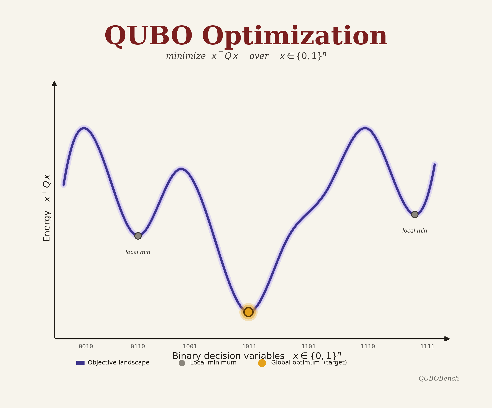
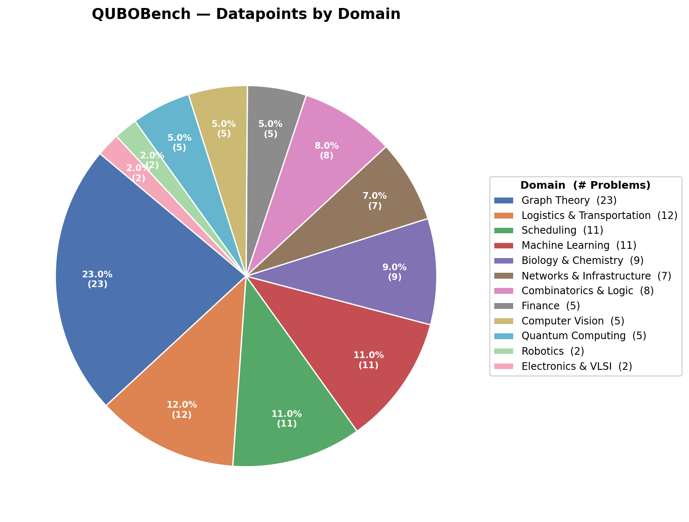
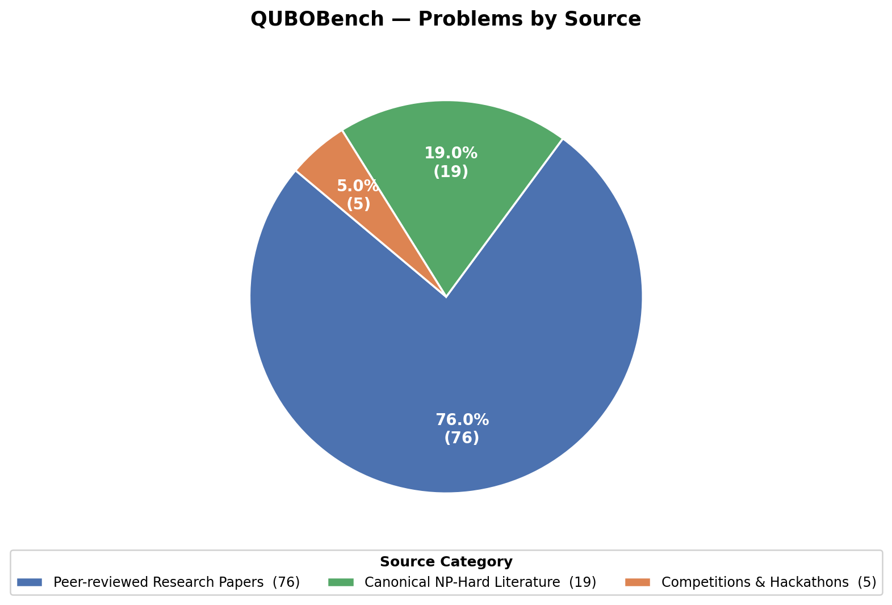

A comprehensive benchmark for evaluating AI agents on automated QUBO formulation generation.
QUBOBench is a curated benchmark dataset of 100 distinct Quadratic Unconstrained Binary Optimization (QUBO) problems spanning 11 problem domains — from classical graph theory and combinatorial optimization to quantum computing, bioinformatics, machine learning, and beyond.
Each problem in QUBOBench includes a natural language specification describing the optimization objective, binary variable structure, and constraints. Problems are paired with structured test cases and ground-truth solutions that enable fully automatic evaluation of generated QUBO formulations.
QUBOBench is the evaluation backbone for the QuantumQUBO Agent, an LLM-based system that autonomously generates correct, executable QUBO formulations from natural language problem descriptions — a key capability for quantum optimization workflows.
The dataset covers real-world problems sourced from competitive programming judges, quantum computing challenges, domain-specific benchmarks, and original problem designs, ensuring breadth and difficulty diversity.



Browse all problems by domain. Click a category to filter.
Each problem consists of a natural language prompt and test cases with ground-truth solutions.
If you use QUBOBench in your research, please cite our paper.
@inproceedings{ mondal2026quantumqubo, title = {QuantumQUBO Agent: Automating Quadratic Unconstrained Binary Optimization (QUBO) Formulation Generation from Natural Language}, author = {Niloy Kumar Mondal and Md Rizwan Parvez}, booktitle = {ICML 2026 Workshop: AI as a Tool for Mathematics, Computer Science, and Machine Learning}, year = {2026}, url = {https://openreview.net/forum?id=9YTedapat4} }